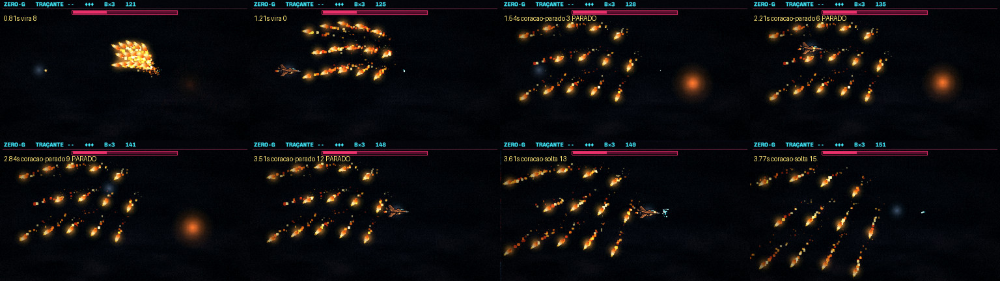

25/11. Spec 2026-11-24-besta-refeita-design.md §4.4 e a trava do §3; o plano está em plans/2026-11-25-besta-passo8-coracao.md. Tudo foi filmado no jogo rodando, no breu (?fase=besta3&mao=nenhuma), no tempo real, com a nave invulnerável. Nada aqui está aprovado.
25/11, os ajustes 1 e 2 que você pediu:
No jogo, o filme leva a nave na velocidade real pelo vão do arco do meio, pelo corredor de cima e até o bolso, e ela não encosta em nada durante o congelamento. Uma coisa a notar: depois da retomada ela volta a se mover, e o galope até a outra âncora passa pelo bolso. Quem soltou a pilha precisa sair dali.

| O que fiz | Por quê | |
|---|---|---|
| 1. O congelamento no clipe | O coracao-a fecha as garras no core (quadros 0–3), segura durante os 2,0 s (3–12) e solta num estouro (13–15). O estouro é o coração voltando. | O clipe já tem esse gesto. O core escurece debaixo das garras, mas a luz do core continua acesa e firme por cima, porque a spec pede o core aceso. |
| 2. O campo | Estilhaços de metal em brasa (o tiro do rasgo), todos de uma vez do peito. Cada um chega ao seu lugar no instante do aperto. | "Estilhaços e lava": a bola de lava respinga e deixa poça ao cair, e isso somaria um segundo perigo ao mapa. |
| 3. O bolso perto dela | ~50 px entre o campo e o corpo dela. | É para onde a leitura do mapa leva, e de onde a pilha acerta. |
| 4. A pilha | Acompanha a nave, 12–20 px à frente. | Ela sai de onde você está quando o coração volta, e não de onde você atirou. |
| 5. O que para | Os projéteis (dela e seus), as brasas e as luzes da lava. O fundo e a própria Besta não param: ela segue apertando o core. | A spec: tudo o que voa. |
| 6. A trava | 1 de vida até o coração parar uma vez. | A spec: "não morre antes do coração parar". |
node --experimental-transform-types scripts/test-besta-coracao.mjs):
node scripts/_f4/_besta-coracao.mjs), tudo certo:
src/entities/besta/coracao.ts, os dois testes e o filme;Predador.ts (o estado coracao, o campo, congelar e descongelar, a trava), Boss.ts e BossNucleo.ts (o congelado e o limparCampo), GameScene.ts (os tiros congelados, a pilha, a bomba) e WeaponSystem.ts (a perseguição e o alcance esperam). Nada commitado.